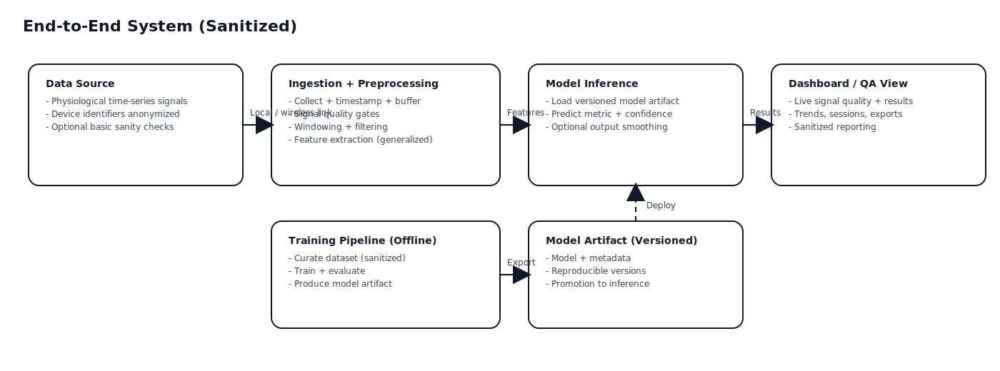
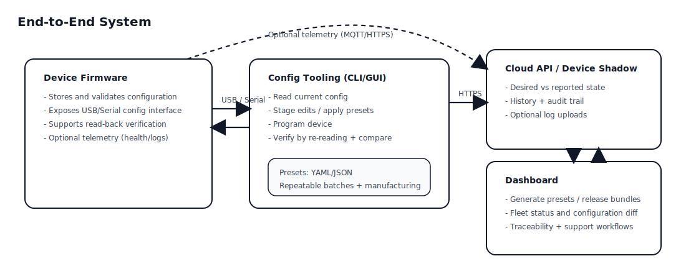
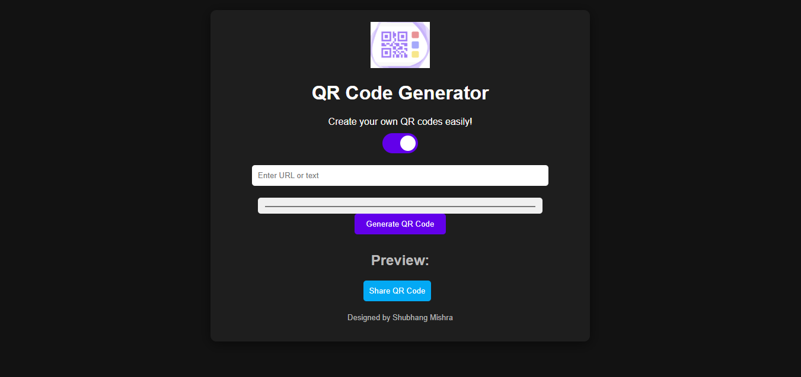
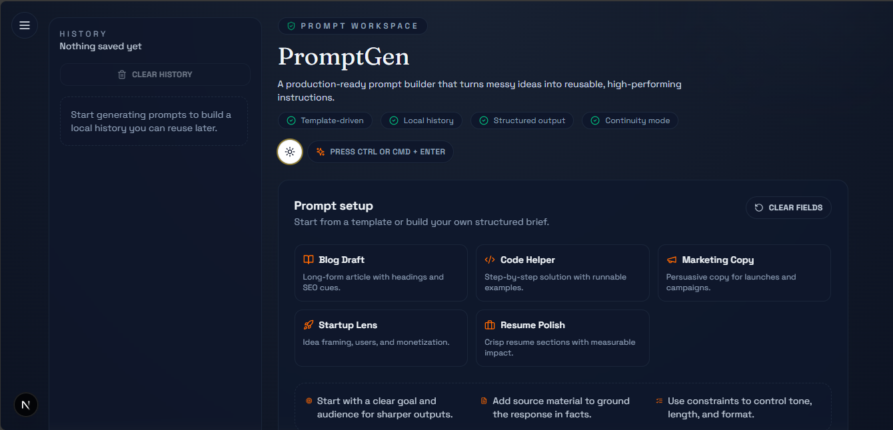

Embedded & IoT Engineer · Automation · ML · Prompt Engineering
I build reliable embedded platforms and engineering tools that teams can ship with confidence.
Embedded Systems & IoT Engineer focused on Zephyr (nRF52840), BLE sensor pipelines, STM32/ESP32/Raspberry Pi, circuit design & hardware debugging, and Python dashboards + workflow automation for monitoring and ML inference.
I take prototypes to reliable demos: structured acquisition/validation/transport, BLE reconnect logic, debug-friendly logs, and internal tooling that speeds bring-up. Open to embedded firmware + BLE roles (full-time or contract).
Graduate Engineer Trainee · Morphedo Technologies (R&D · NPD)
nRF52840 · Zephyr RTOS · BLE · SAADC
STM32 · ESP32 · Raspberry Pi · Arduino
Circuit Design · PCB Prototyping · Debugging
PySide6 · PyQt5 · Streamlit
Ship-ready
10-15 prototypes (2023-2025)
Sensor platforms, BLE tools, dashboards
Reliability
Debug + Hardening
Reconnect logic, validation, safe fallbacks
Tooling impact
Faster bring-up
Internal apps that cut test time & errors
10-15
prototypes hardened for demos/labs (2023-2025)
Faster
bring-up via tooling + checklists
Stable
field behavior from validation gates
Python
Zephyr / nRF52
BLE / GATT
Docker
Linux
GitHub
Trusted by teams at:
Morphedo Technologies
Satyam Software Solutions
NewGen IEDC
Featured
Recent impact snapshots
Problem -> approach -> outcome, kept short. Full details live under Projects.
Sensor platform hardened for field tests
Stabilized acquisition/validation, framed data for dashboards, and added reconnect logic for noisy labs.
Result: fewer corrupt packets and faster field-debug loops.
See full caseProvisioning console for device configs
Built a PySide6 app with schema-like checks, serial workflows, and clear error states to cut rework.
Result: reduced provisioning mistakes and rework during bring-up.
See full caseDesktop dashboard for sensor trends
Prototype time-series UI with buffered updates, debug views, and operator-friendly layouts.
Result: quicker readouts and fewer missed anomalies during tests.
See full caseAbout
Engineer mindset: reliability, clarity, repeatability
I enjoy work that connects hardware and software: from circuit-level debugging to firmware to dashboards that make data useful.
I completed my B.Tech in Artificial Intelligence and Machine Learning (ITS Engineering College, 2022-2025) after a diploma in Electrical Engineering. My focus is embedded systems and IoT - building stable platforms, integrating sensors, and creating tooling + automation that helps teams test, configure, and ship faster.
B.Tech | AI & ML | ITS Engineering College (2022-2025)
Diploma | Electrical Engineering | Priyadarshini Polytechnic
What I'm strong at
- Firmware reliability: structured acquisition -> validation -> transport, with debug-friendly logs and safe fallbacks.
- Microcontrollers: nRF52840, STM32, ESP32, Arduino, Raspberry Pi; UART/SPI/I2C integration and debugging.
- Hardware debugging: power rails, comms issues, sensor bring-up, board-level verification and iteration.
- Dashboards/tools: PySide6/PyQt5/Streamlit apps for monitoring, configuration and ML inference.
- Automation: workflow automation for provisioning, validation, and repeatable test steps.
- Prompt engineering: reusable templates and integration-ready API patterns for assistant workflows.
NDA-safe presentation
Some work is confidential. I share it as anonymized summaries (skills + architecture) without disclosing product details, datasets, or code.
Typical workflow
- Define system constraints (power, latency, sampling rate, BLE throughput, data integrity).
- Prototype fast, then harden: error handling, validation, reconnect logic, logging, and test steps.
- Automate repeatable flows with scripts and dashboards to reduce manual errors.
- Make it usable: internal tools for config, verification, and live monitoring dashboards.
- Document decisions so work is repeatable for teams.
Tools I use often
Zephyr RTOSnRF Connect / BLELogic analysis mindset
AltiumGitPython toolingLinux
Experience
Hands-on R&D: firmware, hardware, and tooling
Roles where I contributed to embedded product development, debugging, and internal tools that improve iteration speed.
Graduate Engineer Trainee · R&D (NPD)
Morphedo Technologies Pvt. Ltd. · Noida
Jun 2025 - Present
Zephyr · nRF52840
BLE · GATT
Sensors
Dashboards
Hardware Debug
- Owned embedded pipelines end-to-end (acquisition -> validation -> transport) and BLE integration for sensor devices.
- Built/maintained internal dashboards, provisioning tools, and automation scripts; reduced bring-up/validation time for new boards.
- Ran hardware integration/debug sessions (power/comms/sensor issues) and documented repeatable checks for the team.
Trainee Engineer
Satyam Software Solution Pvt. Ltd. · Noida
Dec 2024 - Feb 2025
Altium
Circuit Design
PCB
Debug
- Designed circuits and PCBs in Altium; focused on clean documentation and review-ready outputs.
- Debugged R&D hardware issues (power, comms, component faults) to cut rework cycles.
- Standardized bring-up checks: rails/IO, comms validation, and structured fault isolation.
Project Intern
NewGen IEDC · Greater Noida
Jan 2024 - Nov 2024
IoT
Raspberry Pi
Arduino
Team Leadership
- Led prototype teams building IoT demos and electronics integrations with measurable stability improvements.
- Standardized wiring, sensor integration, and test steps to reduce last-minute failures during demos.
Skills
Tech stack & tooling
Embedded + AI generalist: firmware, hardware, ML, prompt engineering, and automation that ship together.
Programming
CC++PythonTypeScriptJavaScriptSQL
Embedded & IoT
nRF52840Zephyr RTOSBLE · GATTSTM32ESP32Raspberry PiArduino
UARTSPII2CADC / analog interfacesMQTTModbusRS-485CANUSB
Sensors & Actuators
Hardware
Hardware DebuggingJ-LinkOscilloscopeCircuit DesignPCB PrototypingAltium DesignerBMS
AI / ML / Automation
Prompt Engineering & EvaluationAPI IntegrationSafety / GuardrailsRate Limiting
Machine Learningscikit-learnTensorFlowPyTorch
Time-seriesFeature Engineering
AI AutomationWorkflow Automation
Dashboards & UI
PySide6PyQt5StreamlitMatplotlib
Next.jsHTMLCSSQSS
Tools & Practices
Git & GitHubLinuxDockerAutomation Scripts
ValidationLoggingDebug Workflows
Highlights
Achievements & leadership
Competitive events, representation, and community contributions.
Achievements
- Finalist at Electrothon 6.0 (NIT Hamirpur, 2024); winner of Orkes Challenge and Scavenger Hunt.
- Top 15 in Hackaccino (Bennett University, 2024) for an embedded/IoT build.
- Represented BigBlare Innovation at the UP International Trade Show 2024 (technical lead).
Strength signals
- Comfortable taking prototypes to stable demos: structured debugging, validation, and reconnect logic.
- Explains systems clearly (hardware -> firmware -> data -> tooling) for cross-functional teams.
- Regularly present technical work to stakeholders and handle NDA-safe walkthroughs.
Leadership & volunteering
Organized IDEATHON 2024, helping teams convert early-stage ideas into workable prototypes and improve demo reliability.
What I'm looking for
- Embedded firmware roles (Zephyr / nRF52 / STM32) and BLE sensor platforms.
- Hardware + firmware integration and debugging-heavy environments.
- Tooling + dashboards that accelerate product and validation cycles.
Hackathons
Hackathons & certificates
Participated in 4-5 hackathons across embedded and IoT. Each entry links to a LinkedIn recap or certificate.
Electrothon 6.0
Built an embedded/IoT prototype with a demo-ready validation flow and rapid iteration cycles.
EmbeddedIoTRapid prototyping
Hackaccino
Delivered a stable IoT demo with clear telemetry, quick fault isolation, and team coordination under time pressure.
IoTTelemetryTeamwork
Innocodeathon
project combines the power of hardware, software, and nature to develop a groundbreaking solution - an algae-based oxygen generator.
Breathe GreenIoTFrom CO₂ to O₂
HACKED
AutomationIoTWeb Dev
Certificates
-
ViewAWS Academy Graduate - Cloud Foundations - Training Badge
Projects
Selected work (public + NDA-safe summaries)
Confidential projects are presented as anonymized summaries. NDA projects are ongoing in my current role; details are withheld. Public links are shared on request. Featured above highlights outcomes; here I focus on scope and stack.

Confidential Health-Tech Sensor Platform
NDAEnd-to-end work across firmware pipelines, BLE transport, and engineering dashboards. Details withheld under NDA.
- Implemented sensor acquisition and feature framing with validation checks to reduce corrupt packets.
- Designed reconnect/error-handling strategies for stable field/lab usage.
- Built internal monitoring views to debug trends and device state quickly.
- Result: fewer field regressions and faster issue isolation during lab testing.

Sanitized end-to-end architecture overview (NDA-safe).
Internal Device Provisioning & Config Console
NDAA production-style internal tool to configure and verify devices. Details withheld under NDA.
- Implemented step-based flows with clear error states and safe failure handling.
- Added schema-like validation and consistency checks for configuration correctness.
- Integrated robust serial patterns for programming and verification loops.
- Result: fewer provisioning errors and more repeatable board acceptance.

End-to-end provisioning pipeline used for this internal console.
Desktop monitoring dashboard prototype: trends, summaries, and update loops for sensor streams.
Confidential Monitoring Dashboard (Desktop Prototype)
NDAA prototype UI for sensor monitoring and trend visualization. Details withheld under NDA.
- Designed readable time-series views with update timers and buffering concepts.
- Built UI layouts that prioritize quick interpretation during testing.
- Implemented structured parsing and error handling for cleaner updates.
- Result: faster debugging cycles for test sessions.

QR Code Generator Web App
Single-page web app to generate custom-colored QR codes from text/URLs with preview, download, and share. Public link available on request.
- Clean UI with instant preview and download workflow.
- Web Share API support on compatible browsers.
- Result: frictionless generation flow with a fast preview loop.

PromptGen - Prompt Engineering Workspace
A prompt engineering workspace that standardizes high-quality prompts with templates, personas, constraints, and structured previews. Built for consistent outputs and team reuse.
- Template library (blog, marketing, coding, startup, resume) with persona/audience/context controls.
- Continuity mode + local history for coherent follow-ups and fast reuse.
- Secure Next.js API route for Gemini with validation, timeouts, and basic rate limiting.
- Result: consistent prompt quality and faster iteration for teams.
Motor-control prototype with real-time UI to visualize and tune telemetry.
Motor Control + Real-time GUI Prototype
Prototype system controlling motors with a GUI for monitoring and tuning during testing.
- Real-time status visualization (telemetry + operating mode).
- Designed UI flow for quick validation during hardware tests.
- Result: quicker tuning during bench tests.
IoT monitoring prototype integrating sensing + MQTT telemetry for remote observability.
IoT Monitoring Prototype
project demonstrates how to control a Delta VFD EL (Variable Frequency Drive) using a Raspberry Pi through RJ45 using the Modbus communication protocol
- Sensor integration + structured telemetry publishing.
- Focused on stability, readable metrics, and reconnect behavior.
- Result: More reliable telemetry during long runs.
Microalgae oxygen generator prototype with sensing and dashboard-style monitoring.
Oxygen Generator (Microalgae) - Monitoring Prototype
Prototype for environmental monitoring with multiple sensors and remote visualization.
- Integrated sensors and published readings for visualization.
- Implemented basic validation and fault handling for cleaner logs.
- Result: Monitoring Oxygen and CO₂ levels in real-time in custom web dashboard.
Case Studies
How I build: architecture, constraints, validation
NDA-safe breakdowns focusing on engineering decisions, reliability patterns, and tooling.
Embedded + BLE pipeline (Zephyr on nRF52840) Firmware · BLE · Sensors
- Goal: stable sensor acquisition and BLE streaming suitable for dashboards and analysis.
- Constraints: battery life, BLE throughput, and consistent sampling under noisy lab conditions.
- Approach: acquisition -> validation -> framing -> custom GATT service.
- Reliability: reconnect strategy, input checks, safe defaults, debug logs.
- Result: fewer data dropouts and faster issue isolation during bring-up.
Hardware bring-up & debugging workflow Hardware · PCB
- Work: circuit design reviews, PCB prototyping, bring-up scripts, and fixture planning for repeatable tests.
- Constraints: mixed-signal noise, tight power budgets, and short iteration cycles.
- Checks: rails/IO/comms health, sensor sanity runs, thermal touchpoints, and calibration sanity passes.
- Debug kit: logic-analyzer captures, boundary/smoke tests, and fault isolation steps logged per board.
- Result: fewer "random" failures, faster acceptance, and cleaner handoff notes for firmware teams.
LLM prompt design + API integration patterns Prompt Engineering · Integration
- Work: prompt design + reusable templates, plus API wrappers that enforce structured inputs/outputs.
- Constraints: latency, cost per call, and variability across model versions/providers.
- Guardrails: validation layers, graceful fallbacks on provider errors, and user-friendly error copy.
- Tooling: logging hooks for prompt/version tracking and rapid A/B tweaks without code changes.
- Result: predictable assistant behavior and faster iteration for product teams.
Resume
Full professional profile
View or download my detailed resume including education, experience, projects, and achievements.
Social proof
How I work with teams
Clear communication, repeatable validation, and tools that reduce rework.
Reliability-first delivery with clear acceptance criteria.
Tools that reduce manual steps and speed debugging.
Documentation that makes handoffs smooth.
Morphedo Technologies
Satyam Software Solutions
NewGen IEDC
Contact
Let's build something together
For embedded firmware, BLE sensor platforms, hardware design/debug, dashboards, or AI tooling - reach out.
Greater Noida, Uttar Pradesh, India · 201301
linkedin.com/in/shubhang-mishra-b7b1181b2
Open to full-time and contract roles, remote or hybrid. India or global teams welcome.
Replies typically within 24-48 hours.
If you want case studies or repo access, mention it in your message.
For quick responses, email is preferred.